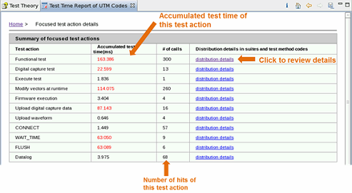
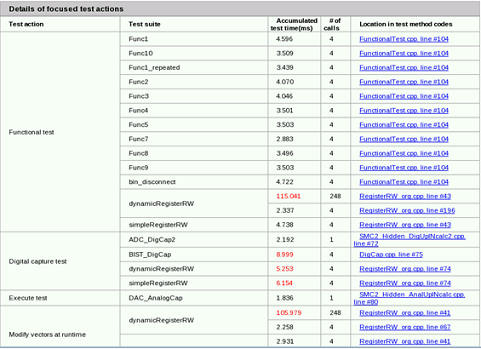

Test time summary of focused test actions
Test Time Breakdown Analyzer can analyze the test time based on the test actions. The report shows the most time-consuming test actions.
To view the details of the report, click test time summary of focused test actions in the Test time analysis report table.
The report presents a summary and the details of focused test actions as illustrated in the following graphics:


Functional changes
- Introduced in SmarTest 7.3.2